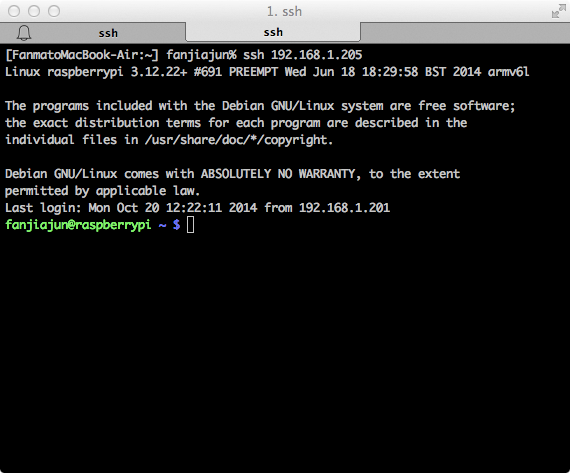

RaspberryPi是一个低成本的ARM Linux系统，售价仅有35美金，但依然提供了非常好的可靠性，我的RaspberryPi 7*24 运行了两年多，没有出过一点问题。此外RaspberryPi的功耗非常低，因此非常适合作为一个一直在线的Headless Home Server使用。本文仅以BT下载为例，事实上RaspberryPi可以完成的事情远比这多得多。
准备工作
RaspberryPi一块：淘宝上就有售，价格大约200多SD卡一张：容量不小于2G移动硬盘一个：RaspberrPi提供了2个USB接口，但由于其供电能力较弱，无法直接驱动2.5寸移动硬盘。如果想使用2.5寸移动硬盘，需使用额外的有源USB Hub。推荐使用3.5寸移动硬盘，由于其本身自带电源输入，3.5寸价格便宜量又足，可以直接使用。网络连接：如果使用无线需要一个USB WIFI，如果使用有线的话，有根网线就行了。
Setup RaspberryPi
首先我们需要下载操作系统的镜像，地址在这里。RaspberryPi支持多个Linux发行版，甚至还支持其它非Linux的操作系统，这里我们使用RASPBIAN，这是一个基于debian的版本，如果你熟悉debian或者Ubuntu的话，会发现它非常容易上手。
接下来我们需要将下载好的镜像烧入到SD卡中，这里以Mac OS为例，如果你使用Windows或者Linux，可以在这里找到安装方法。
插入SD卡到你的电脑，并找出其挂载位置。
diskutil list
从容量和名称上可以大致判断出那个是SD卡，我们假设现在是/dev/disk1，下一步就是把它Unmount下来。
diskutil unmountDisk /dev/disk1
将镜像烧入到SD中，这会花上一点时间，请耐心等待。if参数指定下载好的镜像文件，of即SD卡。
sudo dd bs=1m if=20XX-XX-XX-wheezy-raspbian.img of=/dev/disk1
将SD取下并插入到RaspberryPi中，加电启动。
将RaspberryPi连接到你的路由器，如果你使用有线连接，直接插网线就行，如果使用WIFI，需要手动配置WIFI连接，请自己Google。然后你可以在路由器的管理界面中找到RaspberryPi的IP地址。
现在我们可以通过ssh连接到RaspberryPi了，这里我们假设RaspberryPi的IP地址为192.168.1.205。RASPBIAN镜像的默认用户名是pi，密码是raspberry。
ssh 192.168.1.205
一切顺利的话，便可以成功登录到RaspberryPi了。

挂载移动硬盘
现在很多移动硬盘都采用NTFS格式，NTFS可以在Windows下使用，同时可以支持2G以上的大文件，但RASPBIAN默认不支持NTFS，为此我们需要安装ntfs-3g插件。
sudo apt-get update
sudo apt-get install ntfs-3g
安装完成之后，将移动硬盘连接到RaspberryPi。然后挂载移动硬盘，请注意在你的系统中，移动硬盘的并不一定是/dev/sda1，请自行调整。/mnt/usb是挂载到的路径，当然你也可以选择挂载到别的路径。
sudo mount -t ntfs-3g /dev/sda /mnt/usb
安装 rtorrent
rtorrent是一款非常棒的BT下载软件，由于它是完全基于命令行的工具，所以非常适合RaspberryPi使用。
sudo apt-get install rtorrent
在我们开始使用rtorrent之前，我们先要进行一些设置，请新建文件~/.rtorrent.rc，并输入以下内容。
# 保存下载文件的目录，建议指向移动硬盘上的路径
directory = /mnt/usb/download
# 保存当前rtorrent会话的文件夹
session = /mnt/usb/rSession
# 上传下载设置，请按需调整
upload_rate = 200
download_rate = 200
peer_exchange = yes
# 打开DHT，方便连接更多peer
dht = auto
现在，我们终于可以开始使用rtorrent了，介绍一些简单的操作。
在主窗口下按`SPACE`添加BT种子文件。
选中BT任务后按 Ctrl+s 开始下载
Ctrl+q 退出rtorrent
关于rtorrent，这儿有一篇非常好的tutorial，可以学习到更多技巧。